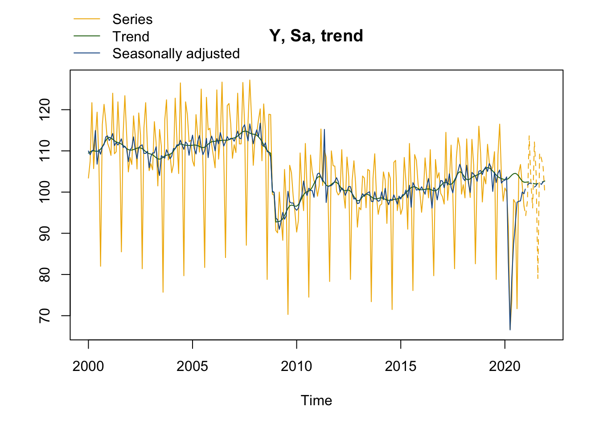

fichier <- tempfile(fileext = "xlsx")
url <- "https://aqlt.github.io/formations/2021/rte/data/data_rte.xlsx"
download.file(url, fichier)
data_rte <- readxl::read_excel(fichier)
date_deb <- 2006
data_rte <- ts(data_rte[,-1], start = date_deb,
frequency = 12)1 - R et JDemetra+
Formation - Désaisonnalisation avec JDemetra+ et RJDemetra 
L’objectif de ce TP est d’apprendre à manipuler JDemetra+ sous R à travers le package RJDemetra.
Pour manipuler JDemetra+ sous R il y a actuellement deux façons :
Utiliser le JWSACruncher qui permet, à partir de la console, de mettre à jour un workspace JDemetra+ et d’exporter les résultats sans devoir ouvrir le logiciel. Pour faciliter son utilisation depuis R, le package
rjwsacruncherpeut être utilisé (voir TP5 - JDemetra+ en production).Utiliser le package
RJDemetraqui permet d’effectuer des désaisonnalisations avec les mêmes algorithmes et paramètres que JDemetra+ et de manipuler des workspaces.
Dans ce TP on utilisera les données du package RJDemetra mais n’hésitez pas à utiliser vos propres séries, en utilisant par exemple le code ci-dessous :
Si besoin, ci-dessous un exemple de code pour récupérer vos données :
RJDemetra
Pour faire de la désaisonnalisation sous R il existe plusieurs packages :
seasonaletx12qui permettent de faire du X-13ARIMA-SEATS en utilisant les programmes du US Census BureauRJDemetraqui est une interface R à JDemetra+ et c’est ce package que l’on va étudier.
RJDemetra est sur le CRAN et se base sur les librairies Java de JDemetra+. Pour l’utiliser il faut avoir Java 8 ou plus. En cas de problème d’installation voir la page : https://github.com/jdemetra/rjdemetra/wiki/Installation-manual.
Le package a aussi un site web (https://jdemetra.github.io/rjdemetra/).
RJDemetra permet :
De faire des modèles RegARIMA, TRAMO-SEATS and X-13-ARIMA comme dans JDemetra+ en définissant sa propre spécification
Manipuler les workspaces de JDemetra+ :
- Importer les modèles workspaces sauvegardés par JDemetra+
- Exporter les modèles créés sous RJDemetra
Créer une specification
Dans les prochains exercices, la série utilisée sera ipi_c_eu[, "FR"] qui est l’IPI français. Vous pouvez bien sûr adapter le code pour utiliser vos propres séries. Les fonctions utilisées seront x13(), x13_spec(), regarima_x13, regarima_x13_spec ou regarima. Le détail des spécifications pré-définies par JDemetra+ sont disponibles ici.
Exercice
Faire la désaisonnalisation d’une série avec X-13 avec la spécification suivante :
- détection automatique du schéma de décomposition, des outliers et du modèle ARIMA
- une correction des jours ouvrables “working days” et un effet graduel de Pâques
Faire ensuite un graphique avec la série brute et la série désaisonnalisée.
Indice
Utiliser la spécification RSA4c pour la désaisonnalisation.
Si le modèle créé s’appelle mysa, regarder les valeurs de mysa$final, mysa$final$series et mysa$final$forecasts.
Solution
mysa <- x13(ipi_c_eu[, "FR"], spec = "RSA4c")
mysa[4m[1mRegARIMA[22m[24m
y = regression model + arima (2, 1, 1, 0, 1, 1)
Log-transformation: no
Coefficients:
Estimate Std. Error
Phi(1) 0.05291 0.108
Phi(2) 0.18672 0.074
Theta(1) -0.52137 0.103
BTheta(1) -0.66132 0.042
Estimate Std. Error
Week days 0.6927 0.031
Leap year 2.0903 0.694
Easter [1] -2.5476 0.442
TC (4-2020) -35.6481 2.092
AO (3-2020) -21.1492 2.122
AO (5-2011) 13.1869 1.810
LS (11-2008) -9.2744 1.758
LS (1-2009) -7.2838 1.756
Residual standard error: 2.193 on 346 degrees of freedom
Log likelihood = -795.1, aic = 1616 aicc = 1617, bic(corrected for length) = 1.767
[4m[1mDecomposition[22m[24m
[1m Monitoring and Quality Assessment Statistics: [22m
M stats
M(1) 0.127
M(2) 0.079
M(3) 1.094
M(4) 0.558
M(5) 1.093
M(6) 0.022
M(7) 0.085
M(8) 0.242
M(9) 0.064
M(10) 0.261
M(11) 0.247
Q 0.355
Q-M2 0.389
Final filters:
Seasonal filter: 3x5
Trend filter: 13 terms Henderson moving average
[4m[1mFinal[22m[24m
Last observed values
y sa t s i
Jan 2020 101.0 102.87273 103.0457 -1.8727280 -0.1730003
Feb 2020 100.1 103.69025 103.0626 -3.5902540 0.6276448
Mar 2020 91.8 82.69170 103.2654 9.1083000 -20.5736602
Apr 2020 66.7 66.55184 103.6945 0.1481625 -37.1426277
May 2020 73.7 79.28883 104.1379 -5.5888279 -24.8490764
Jun 2020 98.2 87.35362 104.4539 10.8463757 -17.1002284
Jul 2020 97.4 92.26057 104.5518 5.1394323 -12.2912806
Aug 2020 71.7 97.54392 104.3369 -25.8439193 -6.7929846
Sep 2020 104.7 97.75728 103.8361 6.9427184 -6.0788659
Oct 2020 106.7 97.87016 103.1969 8.8298396 -5.3267823
Nov 2020 101.6 100.01475 102.6601 1.5852540 -2.6453446
Dec 2020 96.6 99.61740 102.4081 -3.0173983 -2.7907314
Forecasts:
y_f sa_f t_f s_f i_f
Jan 2021 94.29728 101.0937 102.3876 -6.7963909 -1.2939310
Feb 2021 97.89298 101.6869 102.4525 -3.7939488 -0.7655396
Mar 2021 113.65190 102.1478 102.4593 11.5041248 -0.3115701
Apr 2021 102.34532 102.1806 102.3419 0.1647274 -0.1612727
May 2021 96.14552 101.6436 102.1712 -5.4980759 -0.5276194
Jun 2021 112.15785 101.2156 102.0241 10.9422549 -0.8085520
Jul 2021 104.38495 101.5439 101.9635 2.8410057 -0.4195241
Aug 2021 79.02901 102.3820 102.0412 -23.3530134 0.3408366
Sep 2021 109.40288 102.3705 102.1977 7.0323700 0.1728109
Oct 2021 108.22472 101.8558 102.3655 6.3689511 -0.5096780
Nov 2021 106.22014 102.4265 102.5266 3.7936049 -0.1000754
Dec 2021 99.67523 102.9462 102.6812 -3.2709156 0.2649189
[4m[1mDiagnostics[22m[24m
[1m Relative contribution of the components to the stationary
portion of the variance in the original series,
after the removal of the long term trend [22m
Trend computed by Hodrick-Prescott filter (cycle length = 8.0 years)
Component
Cycle 1.830
Seasonal 51.089
Irregular 0.927
TD & Hol. 2.179
Others 44.916
Total 100.941
[1m Combined test in the entire series [22m
Non parametric tests for stable seasonality
P.value
Kruskall-Wallis test 0.000
Test for the presence of seasonality assuming stability 0.000
Evolutive seasonality test 0.014
Identifiable seasonality present
[1m Residual seasonality tests [22m
P.value
qs test on sa 0.924
qs test on i 0.643
f-test on sa (seasonal dummies) 0.671
f-test on i (seasonal dummies) 0.453
Residual seasonality (entire series) 0.415
Residual seasonality (last 3 years) 0.954
f-test on sa (td) 0.091
f-test on i (td) 0.333
[4m[1mAdditional output variables[22m[24my <- mysa$final$series[,"y"]
# De façon équivalente :
y <- get_ts(mysa)
sa <- mysa$final$series[,"sa"]
plot(y)
lines(sa, col = "red")
# ou on peut directement utiliser les fonctions de RJDemetra :
plot(mysa, first_date = 2000, #Pour n'afficher le graphique qu'à partir de 200
type_chart = "sa-trend" # Pour faire le graphique avec y, sa et tendance
)
Exercice
Modifier le modèle précédent pour enlever l’effet graduel de Pâques.
Solution
spec_sans_easter <- x13_spec(mysa,
easter.enabled = FALSE)
mysa2 <- x13(ipi_c_eu[, "FR"], spec_sans_easter)
mysa2$regarimay = regression model + arima (2, 1, 0, 0, 1, 1)
Log-transformation: no
Coefficients:
Estimate Std. Error
Phi(1) 0.5392 0.051
Phi(2) 0.3055 0.051
BTheta(1) -0.6907 0.041
Estimate Std. Error
Week days 0.6949 0.036
Leap year 2.0370 0.734
TC (4-2020) -37.5412 2.286
AO (3-2020) -20.6096 2.234
AO (5-2011) 12.6737 1.898
LS (11-2008) -9.8861 1.884
Residual standard error: 2.376 on 349 degrees of freedom
Log likelihood = -824.2, aic = 1668 aicc = 1669, bic(corrected for length) = 1.878
Exercice
Calculer les p-valeurs associées au modèle Reg-ARIMA de la précédente spécification
Indice
Récupérer le modèle Reg-ARIMA et utiliser la fonction summary().
Solution
summary(mysa2$regarima)y = regression model + arima (2, 1, 0, 0, 1, 1)
Model: RegARIMA - X13
Estimation span: from 1-1990 to 12-2020
Log-transformation: no
Regression model: no mean, trading days effect(2), leap year effect, no Easter effect, outliers(4)
Coefficients:
ARIMA:
Estimate Std. Error T-stat Pr(>|t|)
Phi(1) 0.53923 0.05103 10.567 < 2e-16 ***
Phi(2) 0.30555 0.05096 5.996 4.92e-09 ***
BTheta(1) -0.69072 0.04077 -16.942 < 2e-16 ***
---
Signif. codes: 0 '***' 0.001 '**' 0.01 '*' 0.05 '.' 0.1 ' ' 1
Regression model:
Estimate Std. Error T-stat Pr(>|t|)
Week days 0.69490 0.03592 19.346 < 2e-16 ***
Leap year 2.03702 0.73355 2.777 0.00577 **
TC (4-2020) -37.54123 2.28584 -16.423 < 2e-16 ***
AO (3-2020) -20.60960 2.23446 -9.224 < 2e-16 ***
AO (5-2011) 12.67365 1.89818 6.677 9.30e-11 ***
LS (11-2008) -9.88611 1.88424 -5.247 2.65e-07 ***
---
Signif. codes: 0 '***' 0.001 '**' 0.01 '*' 0.05 '.' 0.1 ' ' 1
Residual standard error: 2.376 on 349 degrees of freedom
Log likelihood = -824.2, aic = 1668, aicc = 1669, bic(corrected for length) = 1.878Créer un workspace
Dans cette partie nous allons créer un workspace depuis R. Pour cela les fonctions qui peuvent être utilisées sont new_workspace(), load_workspace(), new_multiprocessing(), add_sa_item(), save_workspace(), compute(), get_object(), get_name(), get_ts() ou count().
Exercice
Créer un workspace qui va contenir une série désaisonnalisée selon 3 spécifications différentes.
Solution
wk <- new_workspace()
new_multiprocessing(wk, "MP-1")
add_sa_item(wk, "MP-1", mysa, "X13 avec Pâques")
add_sa_item(wk, "MP-1", mysa2, "X13 sans Pâques")
add_sa_item(wk, "MP-1", tramoseats(ipi_c_eu[, "FR"]), "TRAMO-SEATS")
save_workspace(wk, "mon_premier_workspace.xml")
Exercice
Importer le workspace précédent et récupérer :
- Le nom du premier multi-processing
- Le nombre de modèles dans ce premier multi-processing
- L’ensemble des séries brutes
- Le 2ème modèle
Solution
wk <- load_workspace("mon_premier_workspace.xml")
compute(wk)
count(wk) # Nombre de multiprocessing[1] 1mp1 <- get_object(wk, 1) # Le premier multiprocessing
get_name(mp1)[1] "MP-1"count(mp1)[1] 3all_y <- get_ts(mp1) # toutes les séries brutes
model2 <- get_object(mp1, 2) # On récupère l'objet associé au 2ème modèle
get_model(model2, wk)[4m[1mRegARIMA[22m[24m
y = regression model + arima (2, 1, 0, 0, 1, 1)
Log-transformation: no
Coefficients:
Estimate Std. Error
Phi(1) 0.5392 0.051
Phi(2) 0.3055 0.051
BTheta(1) -0.6907 0.041
Estimate Std. Error
Week days 0.6949 0.036
Leap year 2.0370 0.734
TC (4-2020) -37.5412 2.286
AO (3-2020) -20.6096 2.234
AO (5-2011) 12.6737 1.898
LS (11-2008) -9.8861 1.884
Residual standard error: 2.376 on 349 degrees of freedom
Log likelihood = -824.2, aic = 1668 aicc = 1669, bic(corrected for length) = 1.878
[4m[1mDecomposition[22m[24m
[1m Monitoring and Quality Assessment Statistics: [22m
M stats
M(1) 0.118
M(2) 0.070
M(3) 1.020
M(4) 0.207
M(5) 1.020
M(6) 0.023
M(7) 0.086
M(8) 0.252
M(9) 0.061
M(10) 0.272
M(11) 0.253
Q 0.311
Q-M2 0.341
Final filters:
Seasonal filter: 3x5
Trend filter: 13 terms Henderson moving average
[4m[1mFinal[22m[24m
Last observed values
y sa t s i
Jan 2020 101.0 103.05492 103.1535 -2.054924 -0.09860242
Feb 2020 100.1 103.97044 103.3561 -3.870443 0.61433677
Mar 2020 91.8 83.16842 103.7741 8.631582 -20.60564584
Apr 2020 66.7 65.39235 104.3888 1.307651 -38.99644727
May 2020 73.7 79.05610 104.9443 -5.356103 -25.88818063
Jun 2020 98.2 87.34635 105.2787 10.853649 -17.93233952
Jul 2020 97.4 92.32900 105.3035 5.070997 -12.97447645
Aug 2020 71.7 97.65388 104.9547 -25.953878 -7.30080299
Sep 2020 104.7 97.79183 104.3028 6.908172 -6.51098097
Oct 2020 106.7 98.05499 103.5029 8.645008 -5.44786549
Nov 2020 101.6 100.05993 102.7928 1.540069 -2.73284988
Dec 2020 96.6 99.61720 102.3254 -3.017195 -2.70816560
Forecasts:
y_f sa_f t_f s_f i_f
Jan 2021 93.67792 100.6889 102.0697 -7.010962 -1.38078701
Feb 2021 97.04844 101.0898 101.9241 -4.041334 -0.83433350
Mar 2021 111.88132 100.9504 101.7890 10.930954 -0.83859394
Apr 2021 102.97429 101.6532 101.6187 1.321079 0.03446852
May 2021 95.75042 100.9289 101.4711 -5.178523 -0.54218868
Jun 2021 111.64361 100.7014 101.3832 10.942225 -0.68178140
Jul 2021 103.72617 100.9095 101.3791 2.816690 -0.46959728
Aug 2021 78.33366 101.7966 101.4826 -23.462988 0.31407100
Sep 2021 108.80554 101.8094 101.6406 6.996129 0.16879596
Oct 2021 107.51641 101.3617 101.8118 6.154729 -0.45007973
Nov 2021 105.56463 101.8129 101.9805 3.751742 -0.16757433
Dec 2021 99.16008 102.4165 102.1319 -3.256419 0.28462277
[4m[1mDiagnostics[22m[24m
[1m Relative contribution of the components to the stationary
portion of the variance in the original series,
after the removal of the long term trend [22m
Trend computed by Hodrick-Prescott filter (cycle length = 8.0 years)
Component
Cycle 2.807
Seasonal 67.429
Irregular 1.369
TD & Hol. 2.572
Others 26.609
Total 100.786
[1m Combined test in the entire series [22m
Non parametric tests for stable seasonality
P.value
Kruskall-Wallis test 0.000
Test for the presence of seasonality assuming stability 0.000
Evolutive seasonality test 0.035
Identifiable seasonality present
[1m Residual seasonality tests [22m
P.value
qs test on sa 1.000
qs test on i 0.983
f-test on sa (seasonal dummies) 0.556
f-test on i (seasonal dummies) 0.392
Residual seasonality (entire series) 0.714
Residual seasonality (last 3 years) 0.997
f-test on sa (td) 0.015
f-test on i (td) 0.146
[4m[1mAdditional output variables[22m[24mManipuler les objets Java
L’objectif de cette partie est de manipuler la fonction jx13() pour gagner en temps de calcul.
Exercice
Créer un modèle à partir de la fonction jx13() et la spécification sans effet graduel de pâques calculée dans une des sections précédentes.
Solution
myjsa <- jx13(ipi_c_eu[, "FR"], spec_sans_easter)
get_indicators(myjsa, "sa")$sa
Jan Feb Mar Apr May Jun Jul
1990 93.26192 95.28210 94.72427 93.79807 93.58689 92.90669 94.21534
1991 93.60604 92.28757 92.61612 92.18918 87.68624 94.66893 92.29891
1992 91.60322 92.03867 92.44368 92.10173 91.13355 90.57461 89.27557
1993 87.95635 87.66799 86.42064 86.77045 87.29414 86.83820 86.72890
1994 89.25920 87.64515 87.99068 89.29768 91.17636 91.48283 90.76570
1995 95.23894 94.20432 93.92823 93.97688 92.23570 91.96366 93.79453
1996 93.19519 92.59312 93.85781 93.16482 91.35090 94.69040 94.14381
1997 93.28048 95.67111 94.47884 101.83691 96.60488 98.43983 98.24606
1998 102.20545 103.13141 101.62413 102.96106 103.60058 102.33459 103.79731
1999 103.76472 102.74795 103.70819 104.16562 106.06980 107.71979 105.66106
2000 110.06944 109.17177 110.14375 109.79371 114.82438 106.83213 110.32456
2001 112.62576 113.20381 114.26307 110.62964 111.94532 111.54071 112.09929
2002 110.40192 110.92422 110.77613 111.86170 107.96491 110.99208 111.34867
2003 108.82396 109.69598 109.30218 110.11139 106.05417 104.24931 108.98362
2004 108.86061 110.87940 110.17711 110.71582 111.15572 112.82616 111.54792
2005 113.95584 110.83848 106.38000 114.36016 113.60201 111.15980 109.25001
2006 112.56654 110.40119 112.72819 111.48283 114.36479 113.05862 111.30270
2007 112.81233 113.99272 114.79256 113.11564 112.78587 115.81567 116.41861
2008 114.51052 115.76727 111.07812 119.37532 111.27702 111.22352 111.98724
2009 94.36527 93.88381 91.33972 93.06359 94.74364 93.50699 94.26196
2010 96.26416 96.64089 98.58551 99.22953 102.29301 100.37051 99.13683
2011 104.89593 104.99950 104.38147 102.29292 114.79067 97.53951 101.38411
2012 102.79898 100.28989 101.70648 99.91410 98.86265 100.22038 101.40031
2013 97.44981 98.68330 97.59979 100.48643 99.33341 99.94008 100.18739
2014 98.06608 100.13701 98.50695 99.67278 97.97852 97.02262 98.47425
2015 98.46074 99.49526 99.43802 99.15803 98.66745 101.76119 96.60888
2016 101.43823 100.61673 96.76938 102.88879 103.36442 100.25266 96.45526
2017 102.87251 101.24167 102.96195 100.57813 104.44045 101.24441 100.13568
2018 103.43616 102.91552 103.90301 103.66953 99.87362 104.85129 104.60709
2019 105.67633 106.32086 105.23475 105.75330 105.93573 100.22658 105.01869
2020 103.05492 103.97044 83.16842 65.39235 79.05610 87.34635 92.32900
Aug Sep Oct Nov Dec
1990 92.40895 93.48122 93.44382 92.20500 90.35429
1991 92.42568 92.21783 92.03596 91.99483 90.56914
1992 93.41716 89.52944 89.56159 89.94821 88.20834
1993 89.35112 86.64602 86.78198 84.01598 87.23752
1994 91.48403 91.09236 91.80621 92.72059 95.22335
1995 92.44329 93.93017 92.68054 93.31657 94.36201
1996 94.60521 93.92616 93.60896 93.74495 93.25051
1997 101.62786 99.72790 102.47571 100.76052 101.84404
1998 103.61016 103.82358 103.12835 104.35209 102.99943
1999 105.48958 107.49426 107.98066 107.34122 110.18481
2000 109.20510 111.02251 111.62295 113.49313 113.65263
2001 112.99097 110.90319 111.23285 110.60945 107.42627
2002 111.58435 109.50461 109.48479 110.07986 105.97585
2003 108.64535 108.35322 110.34772 109.44870 108.12960
2004 110.49232 112.28445 111.70451 109.01379 111.81955
2005 110.18106 113.13185 108.23681 112.06914 113.39639
2006 112.20573 113.51381 112.45401 112.71426 112.63676
2007 114.37634 112.41341 116.16812 113.65633 111.15318
2008 109.84715 109.52683 108.13030 99.75502 99.31542
2009 100.17498 97.48713 97.00543 96.82694 95.52096
2010 100.93712 100.28494 100.14540 98.36527 102.46107
2011 101.46901 101.52124 101.92153 102.44468 103.38051
2012 101.34382 99.58022 98.33652 98.54055 97.28724
2013 97.83959 97.75148 100.17718 98.33999 97.88808
2014 98.04084 99.40280 98.43145 97.16129 99.15030
2015 102.41622 101.56240 100.63622 100.72218 100.58640
2016 101.13931 100.63261 98.27976 100.78665 102.95168
2017 102.75336 103.61452 105.27554 106.80320 105.60590
2018 103.92286 102.68056 105.22113 105.28450 104.33286
2019 102.42566 104.61463 105.51990 102.22427 102.74974
2020 97.65388 97.79183 98.05499 100.05993 99.61720
Exercice
Toujours avec la même spécification, extraire les révisions de la séries désaisonnalisée du point de janvier 2005 (i.e. : série désaisonnalisée lorsqu’on a les données jusqu’en janvier 2005, puis jusqu’en février 2005, etc.).
Indice
Récupérer l’ensemble des dates de fin d’estimation avec la fonction window(time(ipi_c_eu[, "FR"]), start = 2005).
Solution
dates <- window(time(ipi_c_eu[, "FR"]), start = 2005)
estimations <- sapply(dates, function(last_date_estimation){
myjsa <- jx13(window(ipi_c_eu[, "FR"], end = last_date_estimation), spec_sans_easter)
sa <- get_indicators(myjsa, "sa")$sa
window(sa, start = 2005, end = 2005) # Pour ne récupérer que la valeur en 2005
})
estimations <- ts(estimations, start = 2005, frequency = 12)
plot(estimations)# | include: false
file.remove("mon_premier_workspace.xml")[1] TRUEunlink("mon_premier_workspace", recursive = TRUE)